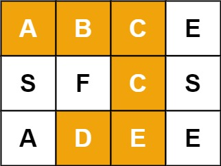
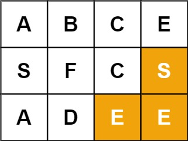
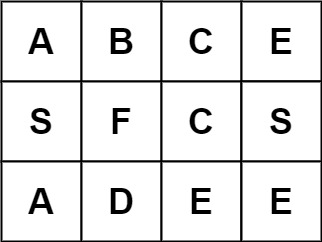

79. 单词搜索
| 题目信息 | 内容 |
|---|---|
| 难度 | 中等 |
| 核心模式 | 网格 DFS + 原地标记 |
| 时间复杂度 | O(mn·4ᴸ) |
| 空间复杂度 | O(L) |
题目与约束
给定一个 m x n 二维字符网格 board 和一个字符串单词 word 。如果 word 存在于网格中，返回 true ；否则，返回 false 。
单词必须按照字母顺序，通过相邻的单元格内的字母构成，其中“相邻”单元格是那些水平相邻或垂直相邻的单元格。同一个单元格内的字母不允许被重复使用。
示例 1：

输入：board = [['A','B','C','E'],['S','F','C','S'],['A','D','E','E']], word = "ABCCED"
输出：true
示例 2：

输入：board = [['A','B','C','E'],['S','F','C','S'],['A','D','E','E']], word = "SEE"
输出：true
示例 3：

输入：board = [['A','B','C','E'],['S','F','C','S'],['A','D','E','E']], word = "ABCB"
输出：false
提示：
m == board.lengthn = board[i].length1 <= m, n <= 61 <= word.length <= 15board和word仅由大小写英文字母组成
进阶：你可以使用搜索剪枝的技术来优化解决方案，使其在 board 更大的情况下可以更快解决问题？
核心不变量
一个格子在同一路径中只能使用一次，返回前恢复。
完整推导
思路推导
-
直觉与痛点（网格上的全排列）：
我们需要在地图上先用两层
for循环作为“雷达”，寻找单词的第一个字母（比如单词是"ABCCED"，先在图里找'A'）。一旦找到起点，就立刻从这个格子发起深度优先搜索（DFS），向它的上下左右四个邻居去高喊：“谁是下一个字母
'B'？”痛点：因为同一个格子不能重复使用，你走过去之后必须把它标记为“已访问”。但是，如果这条路走到一半发现后面断了，你得退回来去试别的方向，这时候你必须把刚才标记过的格子再恢复原状，否则就会断了其他正确路径的活路（这就是“不吃回头草”与“回溯恢复”的博弈）。
-
核心微操（高效的原地标记法）：
很多同学为了记录“哪些格子访问过”，会开辟一个
boolean[][] visited矩阵。空间优化：在真实的工业级面试中，我们可以直接利用原网格进行“位运算标记”或“特殊字符替换标记”。
- 比如：我们要访问
board[r][c]时，先把它的原始字符存入临时变量char temp = board[r][c];。 - 然后把这个格子改成一个绝对不可能在单词里出现的特殊符号，比如
board[r][c] = '\0';（空字符）或者board[r][c] = '#';。 - 等上下左右全部递归探路完毕、准备退出当前函数时，再用
board[r][c] = temp;把原来的字母复原。真正的 O(1) 额外空间，品味直接拉满！
Java 实现（原地回溯剪枝满分版）
- 比如：我们要访问
class Solution {
public boolean exist(char[][] board, String word) {
int rows = board.length;
int cols = board[0].length;
// 1. 双重 for 循环，扮演雷达，寻找单词的“大本营”（第一个字母）
for (int r = 0; r < rows; r++) {
for (int c = 0; c < cols; c++) {
// 只要第一个字母对上了，立刻启动 DFS 深钻
if (board[r][c] == word.charAt(0)) {
// 初始参数：网格，坐标(r,c)，当前要匹配的单词字符索引(0)
if (dfs(board, r, c, word, 0)) {
return true; // 只要有一条路通了，直接大获全胜！
}
}
}
}
return false;
}
private boolean dfs(char[][] board, int r, int c, String word, int index) {
// 🌟 终极终止条件：如果当前匹配的索引已经等于单词长度了，说明全词匹配成功！
if (index == word.length()) {
return true;
}
// 1. 边界防御与剪枝
// 越界检查，或者当前格子的字母和我们要找的字母不匹配（包括撞见被标记的 '#'）
if (r < 0 || c < 0 || r >= board.length || c >= board[0].length || board[r][c] != word.charAt(index)) {
return false;
}
// 2. --- 开始做选择（原地打标记） ---
char temp = board[r][c];
board[r][c] = '#'; // 把当前格子染成 '#'，防止接下来的递归自己踩到自己，造成死循环
// 3. --- 纵深探索 ---
// 向上下左右四个方向扩散，寻找单词的下一个字母 (index + 1)
// 🌟 带有“短路效应”的或运算：只要有一个方向成功了，后面的方向连试都不用试，直接一路返回 true
boolean isFound = dfs(board, r - 1, c, word, index + 1) || // 上
dfs(board, r + 1, c, word, index + 1) || // 下
dfs(board, r, c - 1, word, index + 1) || // 左
dfs(board, r, c + 1, word, index + 1); // 右
// 4. --- 撤销选择（回溯魔法） ---
// 🌟 极其致命！无论有没有找到，都必须把当前格子的字符还原，因为别的分支还要用它！
board[r][c] = temp;
return isFound;
}
}
复杂度
- 时间复杂度：O(M × N × 3L)。其中 M, N 为网格的行数和列数，L 为单词
word的长度。我们需要在网格中遍历 M × N 个起点。对于每个起点，DFS 探索时，除了第一次有 4 个方向可选，后续由于不能走回头路，每次最多只有 3 个方向可选。所以单次 DFS 的最大分支数是 3L。 - 空间复杂度：O(L)。因为我们采用了“原地修改字符”的神仙微操，完全不需要
visited矩阵。唯一的空间开销来自于系统递归调用栈，其最大深度等于单词的长度 L。
易错点与扩展（面试高频细节）
- 踩坑警告（致命错误）：为什么一定要在终止条件里写
index == word.length()，而不是在下面写？ - 很多同学喜欢把终止条件写在函数最开头：if (index == word.length() - 1) return true;。 - 致命后果：如果输入的单词正好只有一个字母（比如board = [['A']], word = "A"）。你的主循环查到board[0][0] == 'A'，进入 DFS。此时index = 0。如果你在开头判定匹配，可能就漏掉了某些边界越界的校验，或者是导致多字符匹配时逻辑错乱。 - 最佳规范：永远让index走到word.length()。当index代表“我已经完美匹配完了前index个字母”时，逻辑才是最无懈可击的。 - 面试追问：“如果我要在网格里同时搜索成千上万个单词呢？你难道要对每个单词都跑一遍这个算法吗？”（对应力扣 212 题：单词搜索 II - Hard 难度） - 满分抢答（直击高级数据结构精髓）：那绝对不行！如果单词量巨大，针对每个单词独立搜索会导致严重超时。 - 终极融合方案：我们应该把这道题的“网格回溯 DFS”和我们之前学过的「208. 前缀树 (Trie)」进行跨界缝合！ - 我们首先把成千上万个待查单词全部织入一棵前缀树中。然后，我们只需对网格的每个格子启动一次 DFS。在网格里每走一步，前缀树的指针也跟着走一步。如果网格里拼出的前缀在前缀树里根本不存在，直接斩断整个网格分支（大面积剪枝）！这属于面试风控、搜索引擎底层的核心算法。